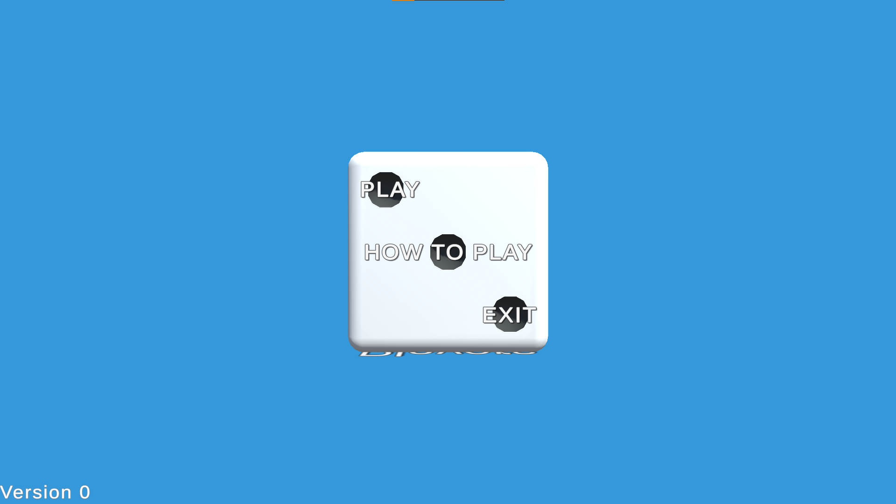

Roll of a dice
a themed game made based on the GMTK game jam theme: Roll of a dice
The Game
The game was built in Unity 2021.1.21f, and made use of the Leantween package as well.
The dice game was a small scale project for the GMTK game jam, we worked on it for a couple days after the submission as we couldn't all participate in the jam on the day but wanted to work on a new quick project. It mostly was a collection of systems preceeded by a menu, however it is in a state that is easily expandable with what we have. The idea was to make a few mini games that all had a random element to them determined by the dice roll system implemented.

My Work
I worked on the menu design and functionality, making use of the Leantween library to create the effects when moving around the the different sides of the dice for each menu state.